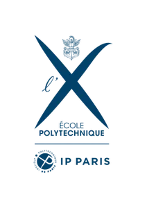
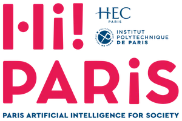
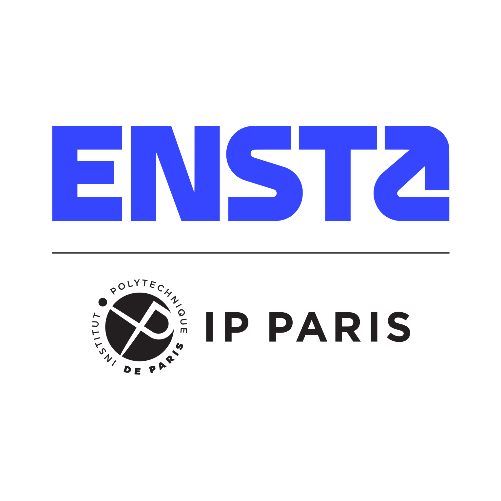
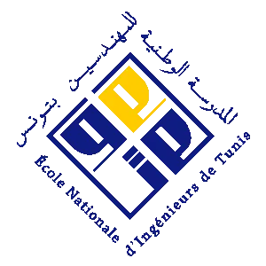
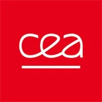
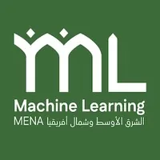
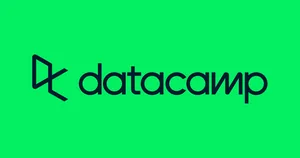

Prix & distinctions
$ ./lister_reussites --verifiees
Bourse d’Excellence
Attribuée par le gouvernement tunisien
Plus de 20 certifications IBM vérifiées
Obtenues et vérifiées sur edX
Google MENA ML 2026 — Djeddah
Bourse complète · organisé par Google DeepMind
Ambassadeur de l’école (5×)
Compétitions nationales de programmation compétitive et d’IA
Article accepté à EUSIPCO 2026
Europeanizing Modular Zero-Shot TTS
C1 — Anglais & français
Autres certifications sur Coursera, DataCamp et edX
// réalisations et distinctions auprès de

École Polytechnique
Hi! PARIS
ENSTA Paris
ENIT
CEA List
Google MENA ML EUSIPCO 2026
DataCamp Gouvernement tunisien École Polytechnique Hi! PARIS ENSTA Paris ENIT CEA List Google MENA ML EUSIPCO 2026 IBM AWS edX Coursera DataCamp Gouvernement tunisien